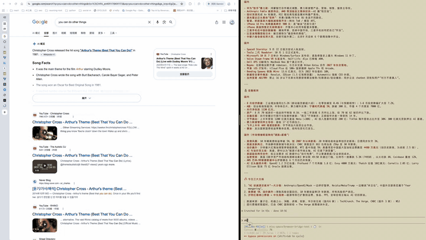
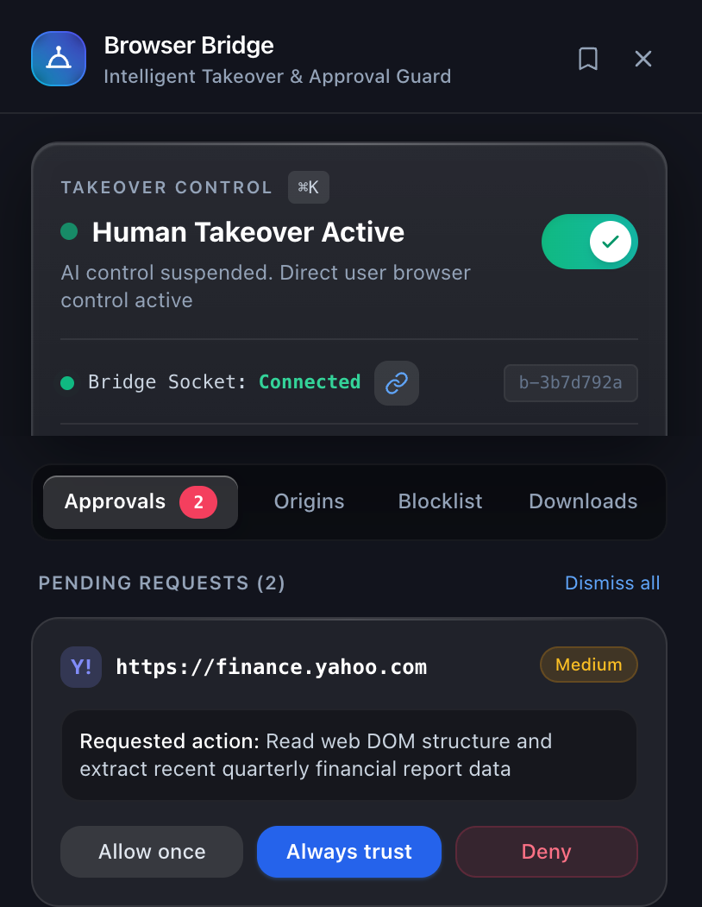

CLI
终端里直接用，开标签页、点按钮、读页面，一整套命令。
开源 · MIT · 只在本机运行
一条 bridge 协议，CLI / MCP / Skill 任意入口——装上 Skill，你正在用的 Agent 就能开浏览器。免云浏览器、免重新登录，会话与凭证留在本机。

snapshot 先给出一份页面地图：有哪些可点的元素、哪些标题、正文大概在哪。Agent 据此只读需要的那一块，而不是把整页塞进上下文。超限的结果会被拒绝，不浪费 token。
| 页面 | 整页 HTML | 实际信号 | 信噪比 |
|---|---|---|---|
| Gmail 收件箱 | 324,078 | 546 | 1:594 |
| GitHub 通知 | 303,176 | 364 | 1:833 |
| Eastmoney 文章 | 169,318 | 2,318 | 1:73 |
按字符数统计，2026-09-15 实测。snapshot 是每次读取前的那份页面地图，本身要花 3–8K 字符。
你在哪个站点操作过，它就记住哪个站点：哪些步骤失败过、正文在哪个位置、哪条路径走得通。下次 Agent 回到同一个站点，这些经验直接跟着一起过去——不用再从头摸索一遍。
[learned site patterns] mail.example.com
Observed to fail here (do not repeat):
- element_not_found on gettext with "[data-message-subject=\"…\"]" (4x)
Site map (checked against this page):
- text container · list [Inbox] → @e12 (6x)
- text container · toolbar [Mailbox actions] → @e7 (6x)Agent 想去没批准的站点、想填密码或信用卡、想提交表单，都会先停下来问你。你说了算：只放行这一次、以后都信任，还是拒绝。
审批在侧边栏排成一队，不打断你手上的事。

在终端里直接调，接到支持 MCP 的客户端，或者装一个 Skill 让你的 Agent 学会开浏览器——挑你顺手的那个。
终端里直接用，开标签页、点按钮、读页面，一整套命令。
Claude Desktop、Cursor、Codex 这些客户端，填一段配置就能连上。
装上 Skill，你正在用的 Agent 就有了开浏览器的能力。
bridge browser:list
bridge --browser <browser-id> tab:new https://github.com
bridge --browser <browser-id> --tab <tab-id> wait:navigation
bridge memory show mail.example.comcurl -fsSL https://github.com/dkisser/browser-bridge/releases/latest/download/install.sh | bash
装好后，在 Chrome 里把 ~/Browser-Bridge/extension/ 作为解压缩的扩展加载。需要 Chrome 114 或更高版本。
github.com/dkisser/browser-bridge